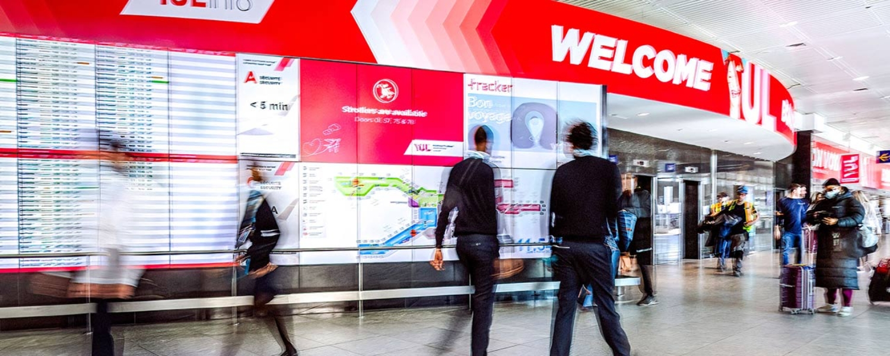
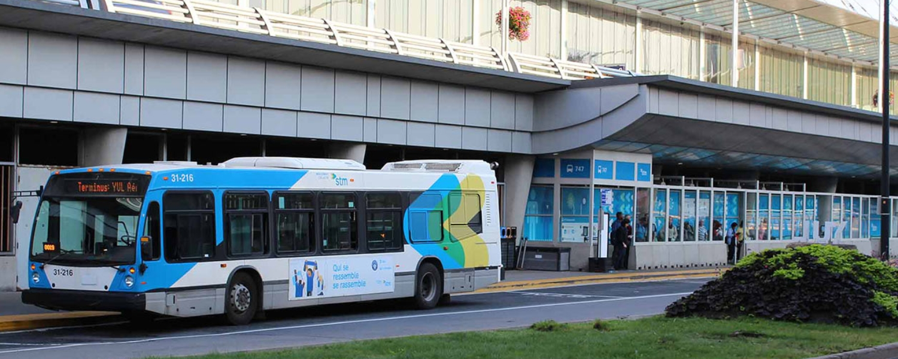
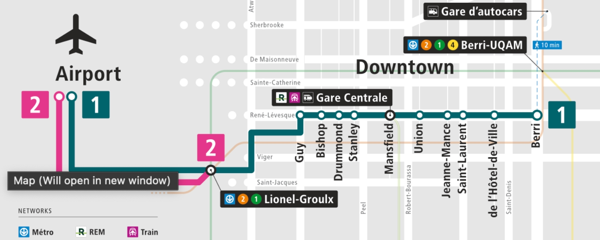
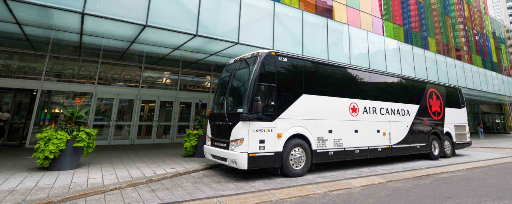
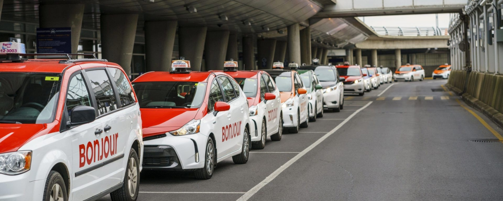
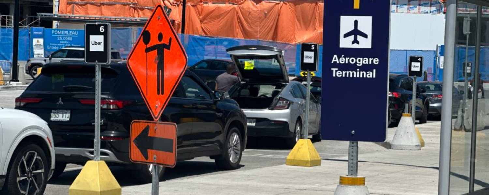
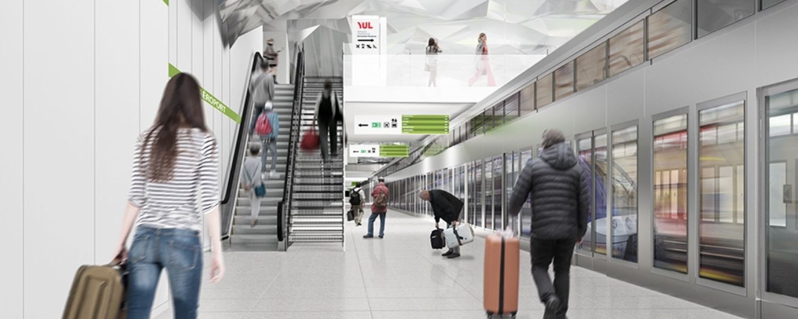

August 19, 2026
Travel TipsBus, Taxi, Uber or Air Canada Shuttle: Every Way From YUL to Downtown

If you have flown in or out of Montréal-Trudeau International Airport (YUL) lately, you have probably noticed that getting to and from the airport is taking longer than it used to. Two things are going on. First, the airport is in the middle of building a brand new REM light rail station, which will eventually let you ride the train straight from downtown to your terminal. Second, road congestion around the airport has picked up, so taxis, rideshares, and cars are all moving more slowly during busy periods.
The good news is that the REM connection is on the way, and it is going to be a game changer. The not so good news is that it will not open until 2027. Until then, here is every way to get between downtown Montréal and YUL, what each one costs, and who it is best for.
Image Header Source: Aéroports de Montréal.
Public Transit: The 747 Express Bus

Source: Aéroports de Montréal.
The 747 is the workhorse route between downtown and YUL, and it runs 24 hours a day, 7 days a week. It comes in two versions.
The short route runs only between the Lionel-Groulx metro station and the airport, and it takes about 30 to 35 minutes. Lionel-Groulx is a handy hub because it sits on both the Orange and Green metro lines, so you can reach it from most of the city.
The long route runs between the Gare d'autocars de Montréal (at the Berri-UQAM station) and YUL, making 11 stops along the way, including one at Lionel-Groulx. This version takes anywhere from 45 to 70 minutes depending on traffic.

Source: stm/info.
Whichever route you take, the fare is $11.25 CAD, and it is valid for 24 hours across the entire STM bus and metro network. That makes it a strong deal if you are going to be riding the metro during your trip anyway. You can pay through the Chrono mobile app, at a ticket vending machine, or at the STM information counter in the international arrivals area.
One handy detail: the 747 is a standard city bus, but it has a dedicated luggage area in the middle of the vehicle where you can stow your bags for the ride. That means no wrestling your suitcase in the aisle, balancing it on a seat, or holding it on your lap the whole way.
Air Canada City Shuttle (Air Canada Passengers Only)

Source: Air Canada.
If you are flying with Air Canada, you have a private option the general public does not. In July 2026, Air Canada launched its City Shuttle, a motorcoach service run in partnership with The Landline Company that connects the Palais des congrès de Montréal downtown directly to YUL.
The pitch is speed and predictability. The shuttle uses the highway's high occupancy vehicle lane and a private airport entrance, which the airline says can shave up to 25 minutes off the trip at peak times compared to the regular access roads. It runs 37 times a day, with departures timed to line up with Air Canada's flight bank.
The fare is $9 CAD one way plus applicable taxes, which is hard to beat. Children under 15 ride free when travelling with an accompanying adult.
Heading to the airport, you start in a dedicated waiting area inside the Palais des congrès, board a premium motorcoach, and get dropped right at check in and bag drop. Buses leave every 15 minutes during the early peak, from 4:45 a.m. to 6:30 a.m., and every 30 minutes after that until 9:00 p.m.
Coming back, collect your bags, then head to the Departures level and find Door 7, where the shuttle picks up curbside. You can pre-book or simply board if there is space. Departures run every 15 minutes from 5:15 a.m. to 6:45 a.m., then every 30 minutes until the last one at 10:00 p.m.
One nice touch for connecting travellers: if the shuttle is delayed and you have a connection of at least 95 minutes, Air Canada will offer complimentary rebooking, subject to availability. The coaches themselves are Quebec built Prevost motorcoaches with 48 reclining leather seats, extra legroom, power outlets, and an onboard washroom. If you need mobility assistance, contact The Landline Company ahead of time. You can book and see the full schedule at montreal.landline.com.
Taxis

Source: Bonjour Taxi.
Taxis are simple at YUL, and you do not need to book ahead. When you land, head to Door 23 on the arrivals level, where a dispatcher will line you up with a car. Every taxi operating at the airport is licensed and has to follow YUL's terms.
For trips to downtown, the fare is fixed, which is a relief because you do not have to watch the meter climb in traffic:
- Between 5 a.m. and 11 p.m.: $49.45 CAD
- Between 11 p.m. and 5 a.m.: $56.70 CAD
A small $1.05 CAD fee is already baked into those downtown fares.
For anywhere other than downtown, the fare is metered and depends on the time of day and how far you are going. During the day, between 5 a.m. and 11 p.m., expect a $4.10 CAD flag drop, $2.05 CAD per kilometre, $0.77 CAD per minute, and a minimum charge of $21.65 CAD. Overnight, between 11 p.m. and 5 a.m., those rates rise to a $4.70 CAD flag drop, $2.35 CAD per kilometre, $0.89 CAD per minute, and a $24.75 CAD minimum. You can pay with cash in Canadian dollars, debit, or a credit card (Mastercard, Visa, or American Express).
Uber and Lyft

Source: CityNews Montreal.
Both Uber and Lyft operate at YUL, but the pickup spots are a little particular, so it is worth knowing where to go before you land.
For Uber, if you are taking Uber Black, go to Door 25 on the arrivals level and book from the pickup area there. For any other Uber, head to the Leigh-Capreol drop off area, which you reach through Door 28 on the arrivals level. For Lyft, everyone uses that same Leigh-Capreol drop off area through Door 28.
A quick heads up on the Leigh-Capreol area: once you exit Door 28, it is about a 3 to 5 minute walk to reach it. When you get there, you will find separate lines for Uber and Lyft. At the time of writing, my tip is to go with Lyft. Uber is the more established service in Montréal, so more people default to it, which means during the busy stretches the Lyft line tends to be the shorter of the two.
On departures, there is no single designated zone. Just ask your driver to drop you at the departures area that matches your terminal and destination. One useful tip: during the peak window from 1 p.m. to 8 p.m., you can ask your driver to use the Express Drop-Off Areas in P4 and P10 to skip the traffic backing up toward the main drop off ramp.
Coming in 2027: The REM

Source: REM.
Here is the light at the end of the tunnel, almost literally. The REM (Réseau express métropolitain) is Montréal's automated light rail network, and a station is being built right at the airport.
Once it opens, the REM will get you from downtown to YUL in about 20 minutes, and because it runs on its own dedicated track, traffic will not slow it down. It will connect to all three of the STM's main metro lines: the Orange line at Bonaventure, the Green line at McGill, and the Blue line at Édouard-Montpetit. Every station in the network has elevators, which is a real relief when you are hauling luggage.
Work on the airport station started back in 2022 and is wrapping up through 2026. The tunnel boring is already finished, and once the station is complete, the system moves into a testing and integration phase before the airport segment opens to passengers in 2027.
The Bottom Line
Right now, getting to and from YUL takes a bit more patience than usual, thanks to REM construction and heavier road congestion. If you want the cheapest reliable option, the 747 bus at $11.25 CAD is tough to beat, especially since it doubles as a 24 hour transit pass. Also if connecting to the Orange or Green metro lines helps you get to your final destination, this might be the way to go.
If you are flying Air Canada and wanting to head downtown, the $9 CAD City Shuttle is an even better deal and often faster. If you value door to door convenience and do not mind the cost, a fixed rate taxi to downtown runs $49.45 CAD during the day. And if you can hold out until 2027, the REM will transform the trip entirely.
Whichever way you go, give yourself a little extra buffer for now and you will be just fine.
Happy travels!